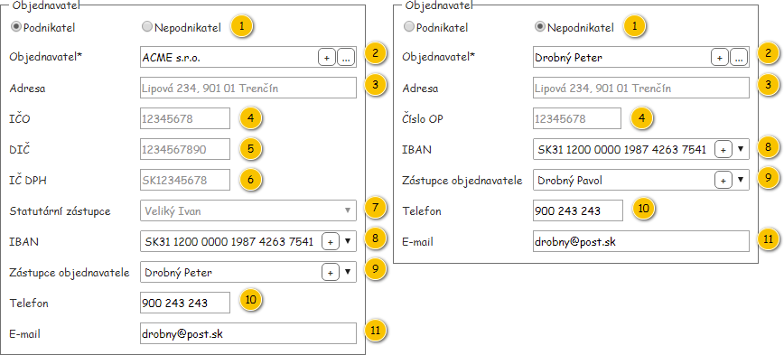
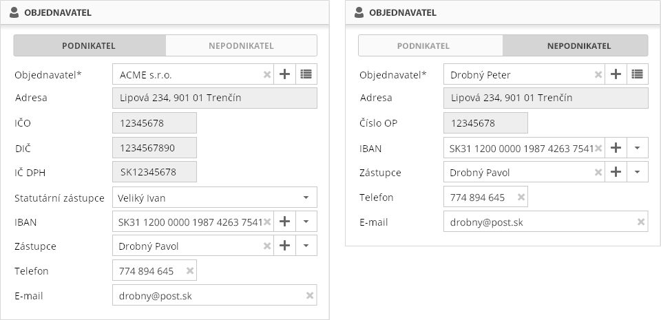

Stručný popis
Část formuláře objednávky – Objednavatel (viz ).
Uživatelské rozhraní
Drátový diagram

Přehled UI komponent
| Callout | Komponenta (podnikatel) | Komponenta (nepodnikatel) | Nadpis | Typ komponenty | Příklad hodnoty | Hodnota | Výchozí hodnota | Formát | Zpřístupněná | Viditelná | Chování | Validace | Poznámka |
|---|
| 1 | Typ zákazníka | Typ zákazníka | – | RadioButton | Nepodnikatel | Entita Zákazník – atribut Objednavatel entity Objednávka. | Podnikatel | | Dle atributu Stav entity Objednávka: - Ano: Žádný stav, Rozpracovaná, K upřesnění.
- Ne: jinak.
| Vždy | Viz Změna typu zákazníka. | – | Hodnoty: |
| 2 | Objednavatel | Objednavatel | Objednavatel* | AutoSuggestTextBox (with add button) | ACME s.r.o. | Entita Zákazník – atribut Objednavatel entity Objednávka. Viz Dostupní objednavatelé. | – |
| Dle atributu Stav entity Objednávka: - Ano: Žádný stav, Rozpracovaná, K upřesnění.
- Ne: jinak.
| Vždy | Viz Změna objednavatele. Viz Přidání objednavatele. | – | – |
| 3 | Sídlo | Adresa | Dle Typu zákazníka: - Podnikatel: Sídlo
- Nepodnikatel: Adresa
| TextBox | Lipová 234, 911 01 Trenčín | Entita Adresa – atribut Adresa sídla entity Zákazník – atribut Objednavatel entity Objednávka. | – | <Číslo popisné>/<Číslo orientační>, Pokud není dostupné Číslo orientační: Pokud není dostupné Číslo popisné: | Nikdy | Vždy | Viz Změna objednavatele. | – | – |
| 4 | IČO | Číslo OP | Dle Typu zákazníka: - Podnikatel: IČO
- Nepodnikatel: Číslo OP
| TextBox | 12345678 | Entita Zákazník – atribut Objednavatel entity Objednávka. | – | | Nikdy | Vždy | Viz Změna objednavatele. | – | – |
| 5 | DIČ | – | DIČ | TextBox | 1234567890 | Entita Zákazník – atribut Objednavatel entity Objednávka. | – | | Nikdy | Pouze pro podnikatele | Viz Změna objednavatele. | – | Entita Zákazník. |
| 5 | IČ DPH | – | IČ DPH | TextBox | SK12345678 | Entita Zákazník – atribut Objednavatel entity Objednávka. | – | | Nikdy | Pouze pro podnikatele | Viz Změna objednavatele. | – | Entita Zákazník. |
| 7 | Statutární zástupce | – | Statutární zástupce | ComboBox | Veliký Ivan | Entita Osoba zákazníka – atribut Statutární zástupce entity Objednávka. Poznámka: Pokud již je uvedený atribut v Objednávce dostupný, je vložen do ovládacího prvku jako prostý text a nedochází dle něho k výběru z dostupných hodnot. Viz Dostupní statutární zástupci. | – | | Dle atributu Stav entity Objednávka: - Ano: Žádný stav, Rozpracovaná, K upřesnění.
- Ne: jinak.
| Pouze pro podnikatele | Viz Změna objednavatele. | – | Je umožněn výběr z dostupných Statutárních zástupců entity Zákazník. Entita Osoba zákazníka. |
| 8 | IBAN | IBAN | IBAN | ComboBox (with add button) | SK31 1200 0000 1987 4263 7541 | Entita Bankovní spojení – atribut Bankovní spojení entity Objednávka. Viz Dostupná bankovní spojení. | – |
Skupiny po 4 znacích oddělené mezerou | Dle atributu Stav entity Objednávka: - Ano: Žádný stav, Rozpracovaná, K upřesnění.
- Ne: jinak.
| Vždy | Možnost zadat pouze písmena a čísla. Viz Změna objednavatele. Viz Přidání bankovního spojení. | – | Je umožněn výběr z dostupných Bankovních spojení entity Zákazník. |
| 9 | Zástupce objednavatele | Zástupce objednavatele | Zástupce | ComboBox (with add button) | Drobný Peter | Entita Osoba zákazníka – atribut Zástupce objednavatele entity Objednávka. Poznámka: Pokud již je uvedený atribut v Objednávce dostupný, je vložen do ovládacího prvku jako prostý text a nedochází dle něho k výběru z dostupných hodnot. Viz Dostupní zástupci objednavatele. | – | | Dle atributu Stav entity Objednávka: - Ano: Žádný stav, Rozpracovaná, K upřesnění.
- Ne: jinak.
| Vždy | Viz Změna objednavatele. Viz Změna zástupce objednavatele. Viz Přidání zástupce objednavatele. | – | – |
| 10 | Telefon | Telefon | Telefon | TextBox | 902243243 | Entita Objednávka. | – |
| Dle atributu Stav entity Objednávka: - Ano: Žádný stav, Rozpracovaná, K upřesnění.
- Ne: jinak.
| Vždy | Možnost zadat pouze čísla a znak '+' (znak '+' bude možné vložit pouze jako první znak celého řetězce). Viz Změna objednavatele. Viz Změna zástupce objednavatele. | Maximálně 30 znaků. | – |
| 11 | E-mail | E-mail | E-mail | TextBox | drobny@post.sk | Entita Objednávka. | – |
| Dle atributu Stav entity Objednávka: - Ano: Žádný stav, Rozpracovaná, K upřesnění.
- Ne: jinak.
| Vždy | Viz Změna objednavatele. Viz Změna zástupce objednavatele. | Tvar e-mailové adresy. Maximálně 255 znaků.
| – |
Chování
Změna typu zákazníka
- KDYŽ uživatel nastaví Typ zákazníka na Podnikatel.
- Systém zobrazí ovládací prvky dle sloupce Komponenta (podnikatel).
- KDYŽ uživatel nastaví Typ zákazníka na Nepodnikatel.
- Systém zobrazí ovládací prvky dle sloupce Komponenta (nepodnikatel).
Poznámka: Pokud uživatel již nastavil hodnoty v některých ovládacích prvcích před změnou Typu zákazníka, systém zobrazí hodnoty uvedené před změnou Typu zákazníka.
Poznámka: Pokud není hodnota ve sloupci Komponenta uvedena, ovládací prvek není zobrazen.
Dostupní objednavatelé
Dostupní Objednavatelé (entita Zákazník) se odvíjí od atributu Stav entity Objednávka:
- Žádný stav (objednávka zatím není uložena) – jsou načteni Zákazníci, kteří jsou dostupní přihlášenému Uživateli (TODO: Odkaz na datový slovník + název atributu).
- Rozpracovaná – jsou načteni Zákazníci, kteří jsou dostupní přihlášenému Uživateli (TODO: Odkaz na datový slovník + název atributu). Vybrán je Zákazník dle atributu Objednavatel entity Objednávka.
- K upřesnění, K realizaci, Zrušená, Uzavřená, Plněná – je načten Zákazník uložený v atributu Objednavatel entity Objednávka.
Změna objednavatele
Pokud uživatel vybere Objednavatele, dojde nejen k vyplnění jednotlivých polí této skupiny, změny se projeví i v rámci Položek objednávky.
- Uživatel změní Objednavatele (bez ohledu na to, zda dojde k jeho výběru či zrušení):
- Systém nastaví všechna pole této skupiny kromě Typu zákazníka (komponenta 1) do výchozího stavu.
- Systém odebere všechny přidané Položky objednávky – viz skupina Položky Objednávky (poznámka: odebrání poslední Položky objednávky vyvolá přidání „prázdné“ Položky objednávky, tedy ve výchozím stavu).
- Pokud uživatel vybral nového Objednavatele:
- Systém nastaví obsah všech polí v této skupině dle zvoleného Objednavatele. V rámci některých atributů entity Zákazník může být k dispozici více různý hodnot:
- Statutární zástupce (komponenta 7): vybrána je taková Osoba zákazníka (atribut Osoby), která splňuje všechny uvedené podmínky (poznámka: požadovaná Osoba zákazníka nemusí existovat):
- Hodnota atributu Výchozí statutární zástupce je rovna TRUE.
- IBAN (komponenta 8): vybráno je takové Bankovní spojení (atribut Bankovní spojení), které splňuje všechny uvedené podmínky (poznámka: požadované Bankovní spojení nemusí existovat):
- Hodnota atributu Výchozí je rovna TRUE.
- Zástupce objednavatele (komponenta 9): vybrána je taková Osoba zákazníka (atribut Osoby), která splňuje všechny uvedené podmínky (poznámka: požadovaná Osoba zákazníka nemusí existovat):
- Hodnota atributu Výchozí kontaktní osoba je rovna TRUE.
- Systém získá počet platných Rámcových smluv zvoleného Objednavatele – jedná se o takové Rámcové smlouvy, které splňují zároveň všechny dále uvedené podmínky:
- Pokud nebyla nalezena žádná Rámcová smlouva, Systém změní Typ položky objednávky v rámci skupiny Položky Objednávky (komponenta 3.1) na Jednorázová (poznámka: Typ položky objednávky Rámcová smlouva je znepřístupněn).
- Pokud byla nalezena právě jedna Rámcová smlouva, Systém tuto Rámcovou smlouvu přednastaví v rámci skupiny Položky Objednávky (komponenta 3.2).
Poznámka: V rámci tohoto algoritmu je od 4. kroku zobrazena vždy právě jedna Položka objednávky.
Smazat – původní chování:
- KDYŽ uživatel vybere Objednavatele.
- Systém nastaví obsah všech ovládacích prvků ve skupině Objednavatel dle pravidel ve sloupci Hodnota tabulky Přehled UI komponent skupiny Objednavatel. V případě, kdy je v některých ovládacích prvcích načteno více hodnot, je vybrána zobrazená hodnota následovně:
- Statutární zástupce – vybrána je ta Osoba zákazníka (atribut Osoby entity Zákazník), kde je atribut Funkce roven Statutární zástupce a zároveň ID je nejnižší. TODO: název atributu ID
- IBAN – vybráno je to Bankovní spojení (atribut Bankovní spojení entity Zákazník), kde ID je nejnižší. TODO: název atributu ID
- Zástupce objednavatele – vybrána je ta Osoba zákazníka (atribut Osoby entity Zákazník), kde je atribut Funkce roven Zástupce objednavatele a zároveň ID je nejnižší (poznámka: vyvolá Změna zástupce objednavatele). TODO: název atributu ID
- KDYŽ uživatel zruší výběr Objednavatele.
- Systém vymaže obsah všech ovládacích prvků ve skupině Objednavatel dle sloupce Výchozí hodnota tabulky Přehled UI komponent skupiny Objednavatel.
Poznámka: K nastavení komponenty Typ zákazníka nedochází.
Změna zástupce objednavatele
- KDYŽ uživatel vybere Zástupce objednavatele.
- Systém nastaví obsah ovládacích prvků Telefon (atribut Telefon) a E-mail (atribut E-mail) vybrané entity Osoba zákazníka.
- KDYŽ uživatel zruší výběr Zástupce objednavatele.
- Systém vymaže obsah ovládacích prvků Telefon a E-mail.
Dostupní statutární zástupci
Dostupní statutární zástupce se odvíjí od stavu objednávky:
- Žádný stav (objednávka zatím není uložena), Rozpracovaná – jsou dostupné Osoby zákazníka nastaveného Objednavatele (atribut Osoby entity Zákazník, kde je atribut Funkce roven hodnotě Statutární zástupce).
- K upřesnění, K realizaci, Zrušená, Uzavřená, Plněná – je dostupná Osoba zákazníka zobrazené Objednávky (atribut Statutární zástupce entity Objednávka).
Dostupná bankovní spojení
Dostupná bankovní spojení se odvíjí od stavu objednávky:
- Žádný stav (objednávka zatím není uložena), Rozpracovaná, K upřesnění, K realizaci, Plněná – jsou dostupná Bankovní spojení nastaveného Objednavatele (atribut Bankovní spojení entity Zákazník).
- Zrušená, Uzavřená – je dostupné Bankovní spojení zobrazené Objednávky (atribut Bankovní spojení entity Objednávka).
Dostupní zástupci objednavatele
Dostupní zástupci objednavatele se odvíjí od stavu objednávky:
- Žádný stav (objednávka zatím není uložena), Rozpracovaná, K upřesnění, K realizaci, Plněná – jsou dostupné Osoby zákazníka nastaveného Objednavatele (atribut Osoby entity Zákazník, kde je atribut Funkce roven hodnotě Kontaktní osoba).
- Zrušená, Uzavřená – je dostupná Osoba zákazníka zobrazené Objednávky (atribut Zástupce objednavatele entity Objednávka).
Přidání objednavatele
- Uživatel stiskne tlačítko pro přidání Objednavatele (entita Zákazník).
- Systém zobrazí modální okno pro vytvoření objednavatele. TODO: odkaz (jiný milník)
- Uživatel vytvoří nového Objednavatele.
- Systém zavře modální okno.
- Systém aktualizuje dostupné Objednavatele a vybere nově vytvořeného Objednavatele (poznámka: vyvolá Změnu objednavatele).
Poznámka: Pokud uživatel nedokončí vytvoření nového Objednavatele, žádné změny se ve formuláři objednávky neprovedou.
Vývěr objednavatele v modálním okně
- Uživatel stiskne tlačítko pro výběr Objednavatele v dialogovém okně (entita Zákazník).
- Systém zobrazí modální okno pro výběr Objednavatele. TODO: odkaz (jiný milník)
- Uživatel vybere požadovaného Objednavatele.
- Systém zavře modální okno.
- Systém vybere v ovládacím prvku uživatelem požadovaného Objednavatele (poznámka: vyvolá Změnu objednavatele).
Poznámka: Pokud uživatel nedokončí výběr Objednavatele, žádné změny se ve formuláři objednávky neprovedou.
Přidání bankovního spojení
- Uživatel stiskne tlačítko pro přidání Bankovního spojení (entita Bankovní spojení).
- Systém zobrazí modální okno pro vytvoření Bankovního spojení. TODO: odkaz (jiný milník)
- Uživatel vytvoří nové Bankovní spojení.
- Systém zavře modální okno.
- Systém aktualizuje dostupná Bankovní spojení vybraného objednavatele a vybere nově vytvořené Bankovní spojení.
Poznámka: Pokud uživatel nedokončí vytvoření nového Bankovního spojení, žádné změny se ve formuláři objednávky neprovedou.
Přidání zástupce objednavatele
- Uživatel stiskne tlačítko pro přidání Zástupce objednavatele (entita Osoba zákazníka).
- Systém zobrazí modální okno pro vytvoření Zástupce objednavatele. TODO: odkaz (jiný milník)
- Uživatel vytvoří nového Zástupce objednavatele.
- Systém zavře modální okno.
- Systém aktualizuje dostupné Zástupce objednavatele vybraného Objednavatele a vybere nově vytvořeného Zástupce objednavatele.
Poznámka: Pokud uživatel nedokončí vytvoření nového Zástupce objednavatele, žádné změny se ve formuláři objednávky neprovedou.
Grafický návrh

Revize
19. 6. 2019: Tomáš Nadrchal
| Odkaz | Stručný popis změny/doplnění |
|---|
| Změna objednavatele | Aktualizováno chování formuláře při výběru objednavatele (naznačeno modře). |